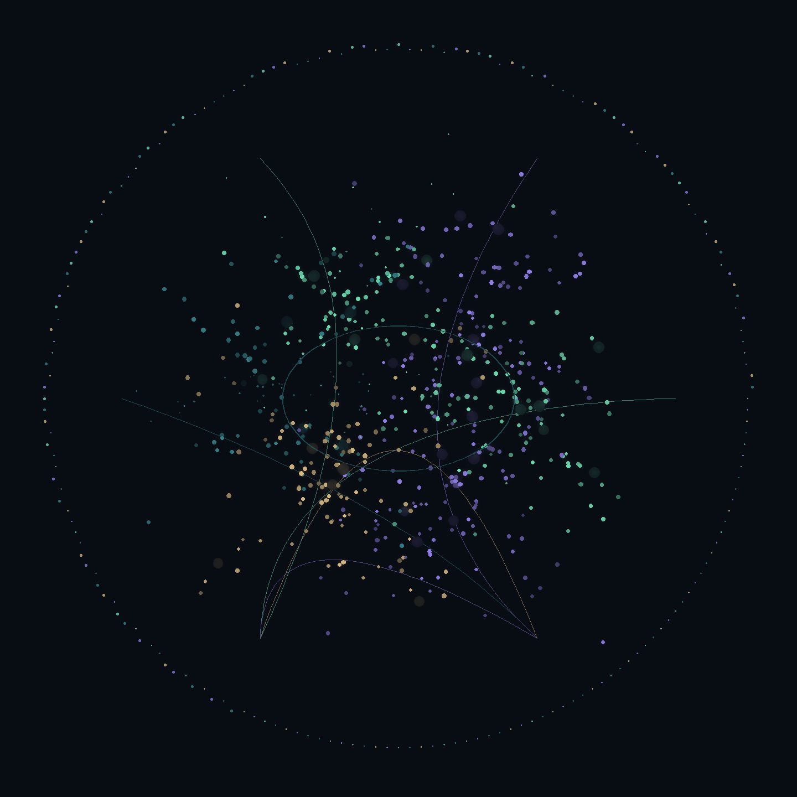

ONE WEEK. ONE BLOCK. ONE ARTWORK.
How a week
becomes an echo.
Follow a small, transparent example from cross-chain records to a composition you can independently verify.
Start the walkthrough ↓This standalone demonstration runs entirely in your browser.
The production application operates separately with authenticated sources and real contracts.
The production application operates separately with authenticated sources and real contracts.

A transaction-derived compositionEXPLAINER-001 · SYNTHETIC SAMPLE
WHAT THIS DEMO PROVES
The mathematics can be replayed.
Your browser independently recomputes the sample’s selection timestamp, canonical dataset hash, Merkle root, art seed and image hash.
WHAT REQUIRES THE LIVE SYSTEM
Evidence comes from real sources.
Production requires authenticated Explorer data, BLS-verified beacon evidence, archival block checks, published artifacts and actual signed NFT/auction transactions. Confidential swap contents are never decrypted.